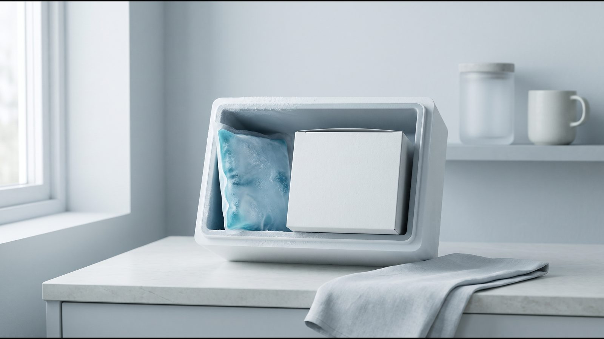

Mounjaro® (тирзепатид): терапия под наблюдением эндокринолога
Mounjaro® (тирзепатид) — агонист рецепторов GIP и GLP-1 для подкожного введения раз в неделю. Назначает врач после консультации.

Формат терапии
Ручка KwikPen или отдельная инъекция?
В обоих вариантах — оригинальный тирзепатид. Разница только в формате подачи и экономичности для вашей дозы.
| Критерий | Ручка KwikPen | 1 инъекция (программа) |
|---|---|---|
| Формат | Оригинальная ручка Eli Lilly на 4 инъекции | Отдельная доза из оригинального тирзепатида |
| Удобство | Самостоятельное введение дома | Подбор дозы и сопровождение специалиста |
| Выгодность | Оптимально от 7,5 мг | 2,5–5 мг — экономия до 55% |
| Стоимость | от 17 000 ₴ (ручка 2,5 мг) | от 2 000 ₴ за инъекцию |
Для дозировки до 7 мг обычно выгоднее программа, от 7,5 мг — KwikPen. Полный прайс
Что такое Mounjaro®
Мунджаро (Mounjaro®) — рецептурный препарат компании Eli Lilly с действующим веществом тирзепатид. Тирзепатид активирует сразу два рецептора, GIP и GLP-1, поэтому его называют двойным агонистом. Препарат вводят подкожно раз в неделю, а назначает его врач после консультации.
По европейской инструкции (EMA) у Mounjaro® два показания: сахарный диабет 2 типа и контроль массы тела у взрослых. Второе предполагает применение вместе с диетой со сниженной калорийностью и большей физической активностью, если ИМТ от 30 или от 27 и есть хотя бы одна болезнь, связанная с весом (например, гипертензия, дислипидемия, апноэ сна, сердечно-сосудистое заболевание, предиабет или диабет 2 типа). Именно оно стоит за запросом «мунджаро для похудения».
Что входит в программу
- бесплатная онлайн-консультация эндокринолога, оценка показаний и противопоказаний, анализы при необходимости;
- подбор дозы врачом и её коррекция во время лечения;
- сопровождение: специалист на связи 24/7, регулярный мониторинг веса и самочувствия;
- [ФАКТ КЛИНИКИ: есть ли в программе куратор и что он делает; если нет, пункт убрать]
- доставка Мунджаро по Украине в термобоксе с аккумулятором холода, до двери или в отделение Новой почты;
- в Киеве выезд медицинского специалиста, который сделает инъекцию Mounjaro® на дому в удобное время.
Решение о лечении и дозе принимает врач.
Как действует тирзепатид
Тирзепатид имитирует два природных гормона, GIP и GLP-1. GLP-1 регулирует аппетит, а GIP, по доклиническим данным, может усиливать это влияние (инструкция FDA). По инструкции EMA, тирзепатид уменьшает голод, усиливает чувство сытости и ослабляет тягу к сладкой и жирной еде.
На уровень сахара препарат влияет двумя путями: усиливает выработку инсулина, когда глюкоза повышена, и снижает уровень глюкагона. Он также замедляет опорожнение желудка, сильнее всего в начале лечения. Период полувыведения около 5 дней, поэтому достаточно одной инъекции в неделю.
Масса тела снижается в основном за счёт жира (EMA). В исследовании SURMOUNT-1 (NEJM, 2022) 2539 взрослых с ожирением или избыточным весом без диабета 72 недели получали тирзепатид или плацебо: средняя потеря массы составила 15,0%, 19,5% и 20,9% на дозах 5, 10 и 15 мг против 3,1% на плацебо. Это средние значения, у конкретного человека результат может быть другим; подробнее — в статье о тирзепатиде.
Кому лечение не подходит
Единственное противопоказание в европейской инструкции Mounjaro® (раздел 4.3): повышенная чувствительность к тирзепатиду или вспомогательным веществам препарата. Американская инструкция тирзепатида (FDA, Zepbound®) добавляет медуллярный рак щитовидной железы у вас или в семье и синдром множественной эндокринной неоплазии 2 типа (MEN 2). Основание: у крыс тирзепатид вызывал опухоли C-клеток щитовидной железы, а касается ли это людей, неизвестно.
Особые предупреждения инструкции EMA, при которых врач отдельно взвешивает риск:
- панкреатит в анамнезе: у таких пациентов тирзепатид не изучали; при подозрении на панкреатит препарат отменяют, а при подтверждённом повторно не назначают;
- тяжёлые болезни пищеварения, в том числе тяжёлый гастропарез: данных нет, нужна осторожность;
- диабетическая ретинопатия: быстрое улучшение уровня сахара может временно её ухудшить;
- инсулин или сульфонилмочевина: растёт риск гипогликемии, дозу этих лекарств врач может уменьшить;
- беременность: не рекомендован; при планировании беременности препарат отменяют минимум за месяц;
- возраст до 18 лет: для контроля веса безопасность и эффективность не установлены.
Показание привязано к ИМТ, поэтому его стоит знать заранее: калькулятор ИМТ.
Как проходит лечение
- Консультация. Эндокринолог собирает анамнез и список ваших лекарств, при необходимости назначает анализы.
- Назначение. Врач решает, подходит ли вам тирзепатид. По инструкции EMA начинают с наименьшей дозы и повышают её не чаще чем раз в 4 недели.
- Инъекции. Подкожно в живот или бедро, в плечо делает другой человек; место каждый раз меняют. В Киеве инъекцию может сделать специалист, который приедет на дом.
- Первые недели. Тошнота, диарея и другие реакции со стороны пищеварения чаще всего бывают, пока дозу повышают, и со временем ослабевают (EMA). Обо всём необычном сообщайте специалисту.
- Мониторинг. Вес и самочувствие отслеживаем регулярно, врач корректирует курс. [ФАКТ КЛИНИКИ: как часто проходят контрольные консультации с врачом]
- Оценка эффекта. NICE (TA1026) советует: если за 6 месяцев на максимальной переносимой дозе потеряно меньше 5% массы, врач и пациент решают, продолжать ли.
Оригинальность и хранение
В программе — оригинальный Мунджаро (Mounjaro®), серию и срок годности показываем до оплаты. Доставляем в термобоксе с аккумулятором холода. Дома препарат хранят по инструкции EMA, отдельно для одноразовых ручек и для KwikPen:
- до использования в холодильнике при 2–8 °C; препарат, который замёрз, вводить нельзя;
- одноразовую ручку или флакон можно держать без холодильника при температуре до 30 °C суммарно до 21 дня, в оригинальной упаковке;
- ручку KwikPen после первого использования держат в холодильнике или до 30 °C и утилизируют через 30 дней.
Что делать, если температура нарушена, объясняет статья о хранении Ozempic® и Mounjaro®.

Частые вопросы
Как часто вводится Mounjaro®?
Раз в неделю, в любое время суток, независимо от еды (инструкция EMA). День введения можно сменить, если между инъекциями проходит не меньше 3 дней.
Какие побочные реакции бывают чаще всего?
По инструкции EMA больше чем у 1 человека из 10 бывают тошнота и диарея, а в исследованиях контроля веса также рвота, боль в животе и запор. Тошнота там была у 24,6–33,3% участников на тирзепатиде против 9,5% на плацебо; в основном реакции были лёгкими или умеренными. Подробнее — побочные эффекты Mounjaro®.
Сколько длится лечение?
Длительность определяет врач по эффекту и переносимости. После отмены вес возвращается: в SURMOUNT-4 (JAMA, 2024) люди, которых перевели на плацебо, за год набрали в среднем 14% массы. Поэтому завершение планируют с врачом заранее (вес после отмены GLP-1).
Что делать, если пропущена инъекция?
По инструкции EMA пропущенную инъекцию делают как можно скорее, если прошло не больше 4 дней. Если больше, её пропускают и следующую делают в обычный день; между инъекциями должно быть не меньше 3 дней. Если сомневаетесь, напишите специалисту.
Что дальше
Начать можно с бесплатной консультации: врач оценит показания и противопоказания и скажет, подходит ли вам тирзепатид. Если выбираете между препаратами, прочитайте сравнение Mounjaro® и Ozempic®.
Источники
- Mounjaro (tirzepatide): EPAR — Product Information (SmPC). European Medicines Agency, 2026. https://www.ema.europa.eu/en/documents/product-information/mounjaro-epar-product-information_en.pdf
- ZEPBOUND (tirzepatide) Prescribing Information, revised 08/2026. U.S. Food and Drug Administration / DailyMed. https://dailymed.nlm.nih.gov/dailymed/drugInfo.cfm?setid=487cd7e7-434c-4925-99fa-aa80b1cc776b
- Jastreboff AM et al. Tirzepatide Once Weekly for the Treatment of Obesity (SURMOUNT-1). N Engl J Med, 2022. https://doi.org/10.1056/NEJMoa2206038
- Aronne LJ et al. Continued Treatment With Tirzepatide for Maintenance of Weight Reduction in Adults With Obesity (SURMOUNT-4). JAMA, 2024. https://doi.org/10.1001/jama.2023.24945
- Tirzepatide for managing overweight and obesity. NICE TA1026, 2024 (обновл. 2025). https://www.nice.org.uk/guidance/ta1026/chapter/1-Recommendations
Материал носит информационный характер и не заменяет консультацию врача. Препараты назначает врач после консультации.